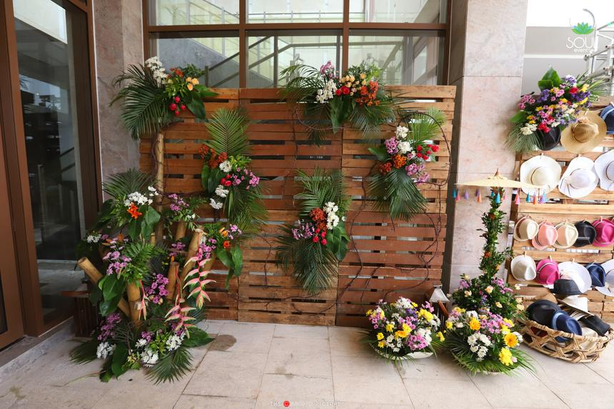

Chelna Lekhi
Designer & Planner
“The magician”
“Chelna is a magician. She easily understands what people want and is an expert in transforming their dreams into reality. In short, she makes things happen.”
— Ramesh